8 - Generative AI for Computer Vision
After this lecture you should be able to:
- Explain how generative modeling differs from classification (one-to-many vs. many-to-one mapping)
- Describe the role of latent variables in enabling diverse outputs from a single condition
- Distinguish unconditional and conditional generation, and recognize common conditional generation tasks
- Describe the mathematical objective of generative models: maximizing the likelihood of training data
- Name and explain desirable properties of generative models: sampling efficiency, output quality, coverage, and likelihood computation
- Select appropriate evaluation methods for generative models depending on the task and available ground truth
Generative models create synthetic data that resembles real data. Unlike classification (many-to-one), generation is one-to-many: latent variables \(\mathbf{z}\) provide the diversity that allows one condition to map to many different outputs. The formal goal is to maximize \(p_{\theta}(\mathbf{x})\) for training data. Models can generate unconditionally (free sampling) or conditionally, guided by a text prompt, class label, mask, reference image, or other input. Desirable properties: sampling efficiency, output quality, coverage, and likelihood computation, are in tension; no single model family achieves all of them simultaneously. Evaluation is challenging because many outputs can be valid: useful methods include likelihood, distributional metrics, human preference studies, and task-specific metrics.
1 Motivation
Generative AI has had a profound effect on many aspects of our society. Particularly, the release of ChatGPT (see OpenAI 2022) kicked off a new era of AI applications, focused on generating natural language. Recently, the quality of image generative models has made significant leaps: Nowadays, it is difficult to distinguish between real and synthetic images (see Figure 1).
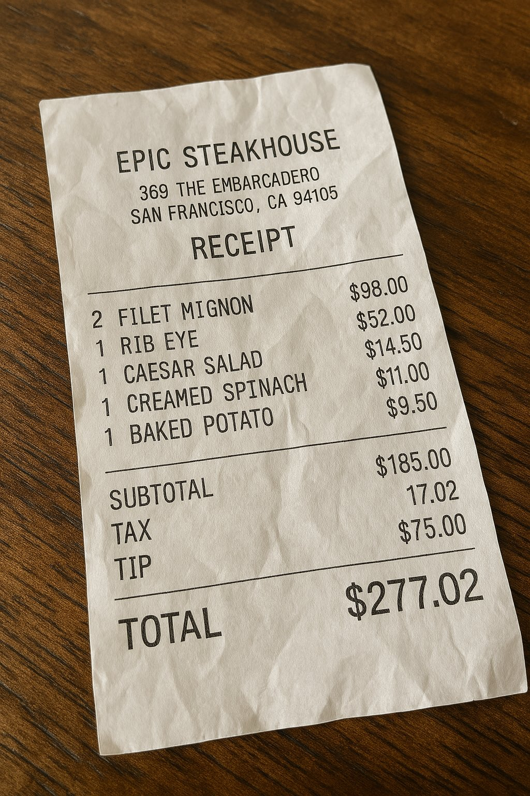
Arguably, the most impressive generative models are multimodal and can generate images, videos, audio and text and understand user intent for precise control of the generation process (see Figure 2).
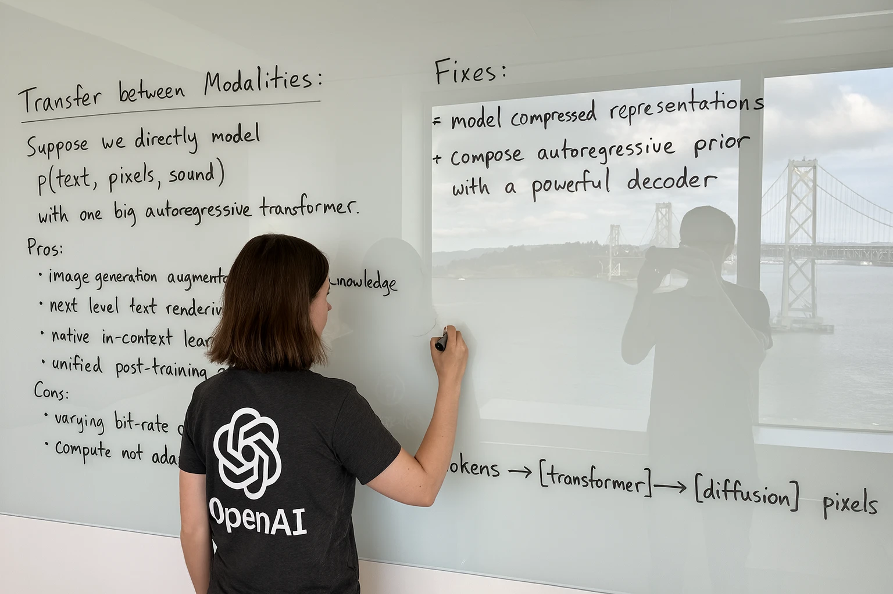
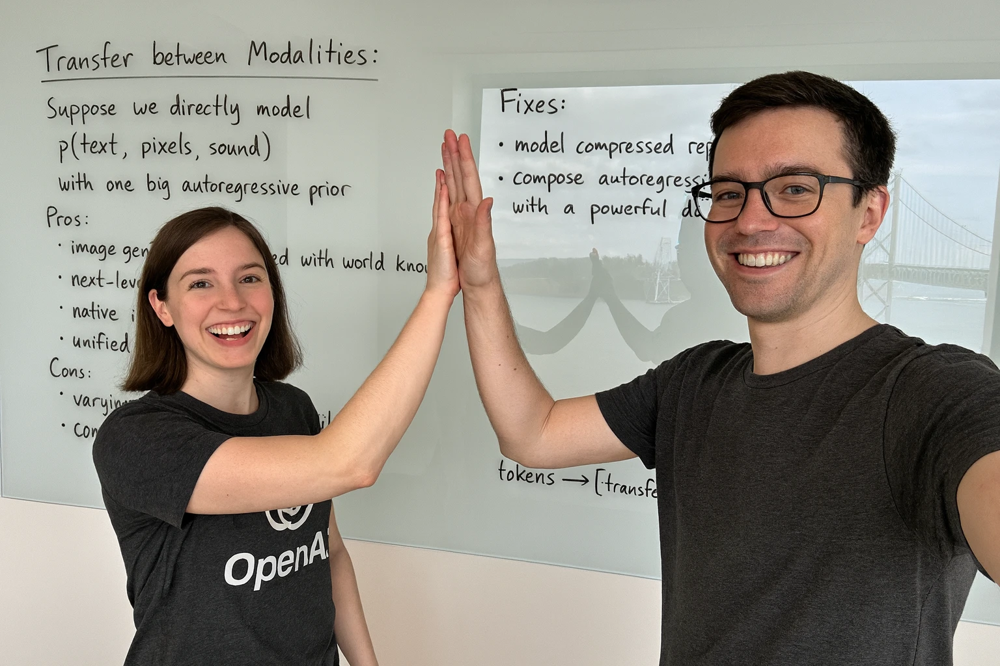
Creating highly creative and diverse images has been enabled by recent advances of models trained on internet-scale datasets. Different companies, such as Midjourney have built businesses around this capability to make it easy for users to generate images (see Figure 3).
Companies such as Canva have integrated generative models into their design tools, making it easy for users to generate images and use them in their designs (see Figure 4).
AI-generated content in advertisements seems particularly prevalent. Suspected AI-generated content is shown in Figure 5.
🤔 What do you think? Are these ads AI-generated?
With recent advances in video generative modes (e.g. OpenAIs Sora2 and others), Midjourney also released a model capable of creating short videos (see Figure 6).
Not all generative models create images from scratch. Image super resolution is a task where generative models up-sample images spatially and enrich detail (see Figure 7).
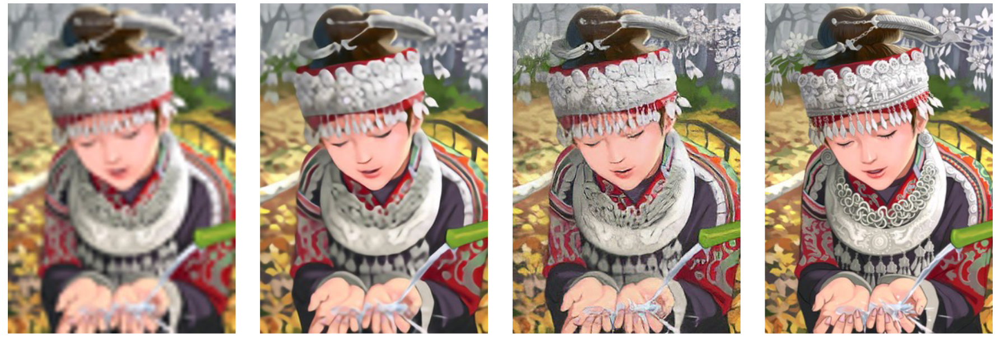
The sampe principle is used in the gaming industry. Interestingly, up-scaling images using neural networks is cheaper than computing images natively in such high resolutions (see Figure 8).
Other examples involve the computation of ray tracing, an expensive operation (see Figure 9).
Generative AI is used in many domains nowadays. Figure 10 shows an application where MRI images are converted to synthetic CT scans. CT scans expose the body to radiation and should thus avoided if possible. However, CT scans show bone structure much better than MRIs. This application helps get the best of both worlds.
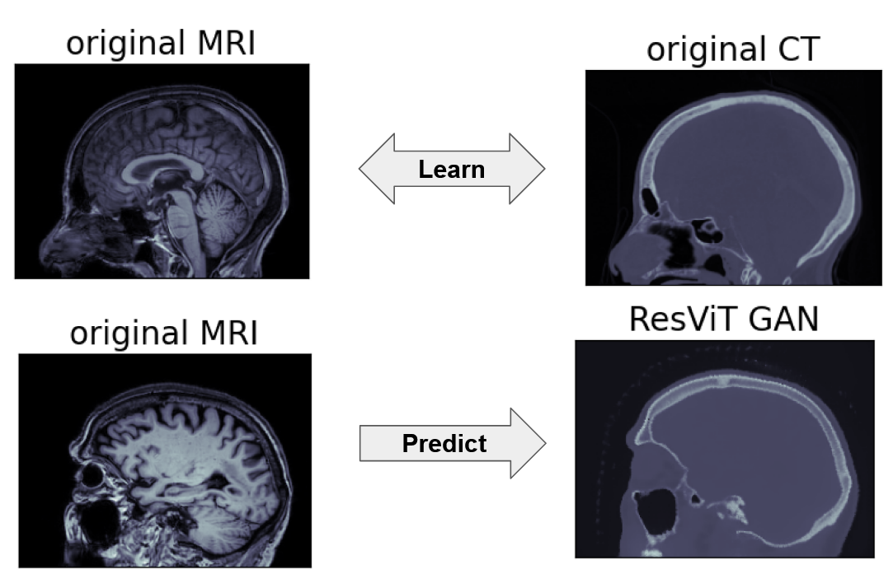
Generative models are also used to create synthetic training data for predictive models, such as for solar flare prediction (see Figure 11).
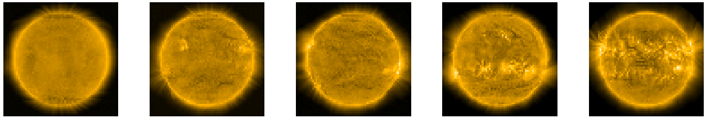
Commercial applications of generative AI include the virtual staging of rooms with objects (furniture). This helps realtors present their properties in a more appealing and “real” way (see Figure 12).
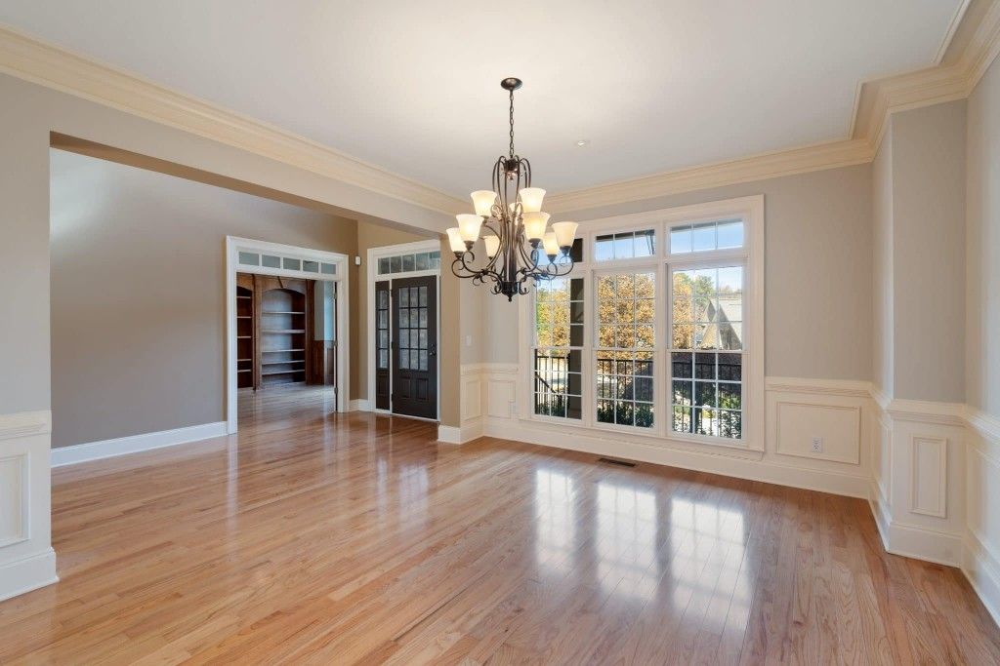
Generative AI has come a long way. Almost nothing illustrates that better than the quality of generated images of human faces (see Figure 13).
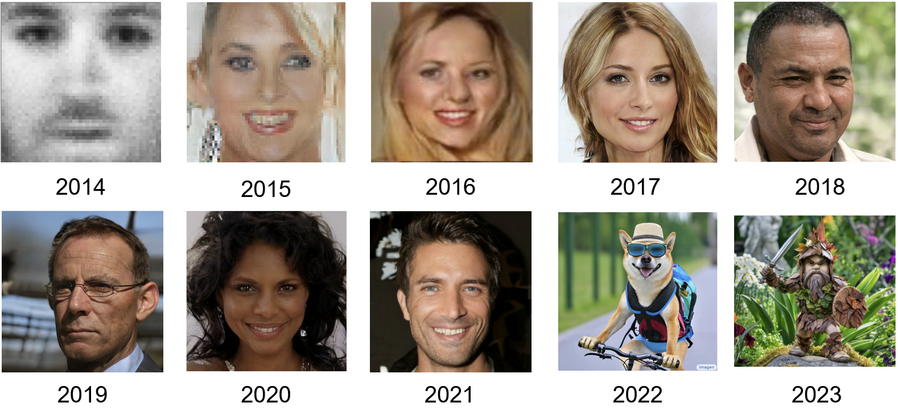
2 What is Generative Modelling?
Let’s contrast generative modelling with a classification task (see Figure 14). Let’s denote \(f(\mathbf{x}) = \mathbf{y}\) for a classifier, and \(g(\mathbf{y}) = \mathbf{x}\) for a generative model.
In classification the model has as input an image \(\mathbf{x}^{(i)}\) and models a probability distribution over all classes \(\mathbf{\hat{y}}^{(i)}\) which ideally matches the true label \(\mathbf{y}^{(i)}\).
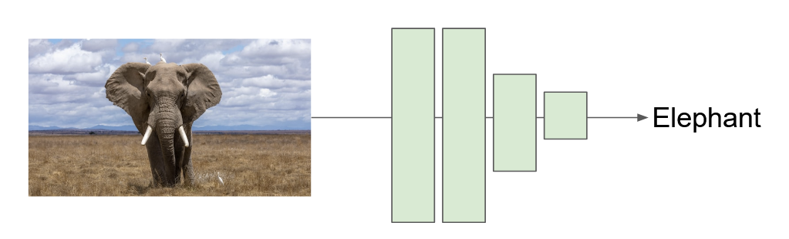
In generative modelling the process is essentially reversed: The input (can) be a label \(\mathbf{y}\), such as a class label, and the output is an image \(\mathbf{x}^{(i)}\), see Figure 15.
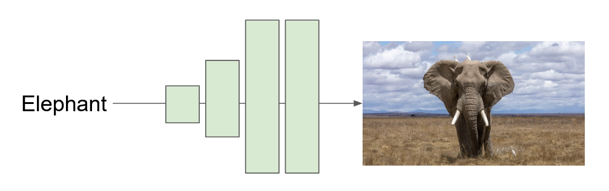
Looking at the input and the output of Figure 15. What could be a problem?
Click for result
If the input (in this case) to the generative model is a label, such as elephant, how can the model generate not just that one elephant?
An important distinction between a classifier and a generative model is:
- \(f(\mathbf{x})\) is a many-to-one mapping. Many inputs (e.g. images of elephants) should be associated with the same label (e.g the elephant label).
- \(g(\mathbf{y})\) is a one-to-many mapping. One label (e.g. elephant) should be associated with many output (e.g. images of elephants).
Since neural networks consist of deterministic operations (such as matrix multiplications and additions) we need a way to transform \(g()\) to a stochastic function. Only then is it possibe to generate different elephants and not always the same image (see Figure 16).
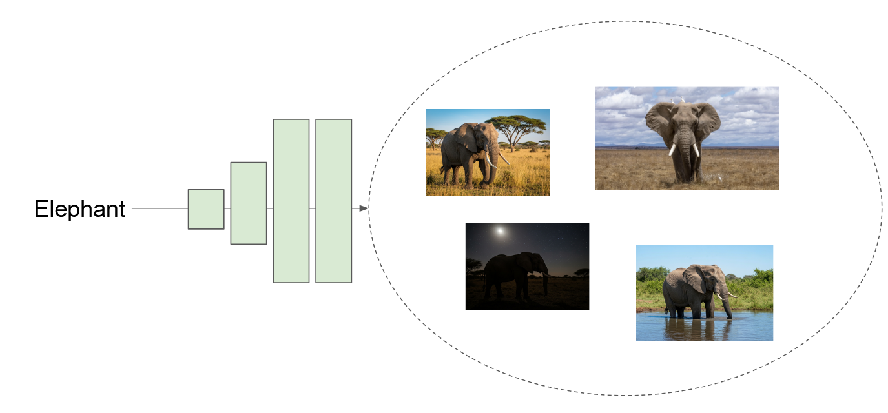
One way to achieve this is to condition the generative model on a stochastic input \(\mathbf{z} \sim p(z)\) and generate samples using \(g(\mathbf{y}, \mathbf{z})\). Often we use a simple Gaussian distribution: \(\mathbf{z} \sim \cal{N}(\mathbf{0}, \mathbfit{I})\).
One way to think about \(\mathbf{z}\) is that of a latent variable. A latent variable is not observed but specifies important characteristics of an image. In our elephant example, the label vector \(\mathbf{y}\) specifies that the image should show an elephant, while \(\mathbf{z}\) might define aspects of the animal (pose, size, numer of individuals) and aspects of the scene (time-of-day, surroundings).
In the following, we often write \(g()\) to simplify notation. Depending on the setting, the model may generate unconditionally, \(g_{\theta}(\mathbf{z})\), or conditionally, \(g_{\theta}(\mathbf{z}, \mathbf{c})\).
Consider the dataset shown in Figure 17: What could be latent variables for this dataset?
Click for result
Each output is defined by it’s width and height. Therefore, we have two (unobserved) latent variables.
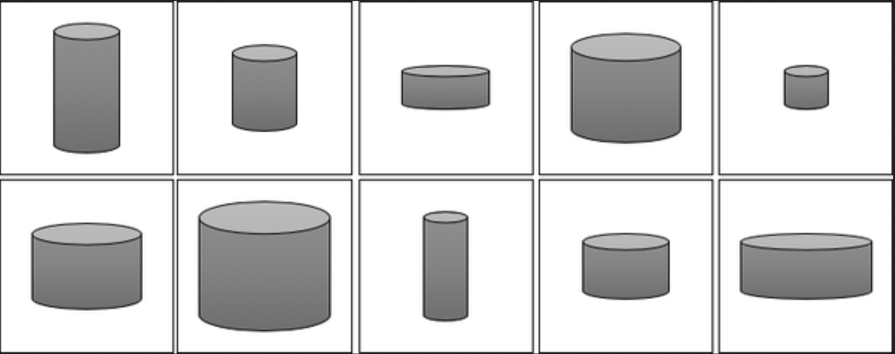
Figure 18 shows a plausible latent space and the corresponding mapping / samples from that space.
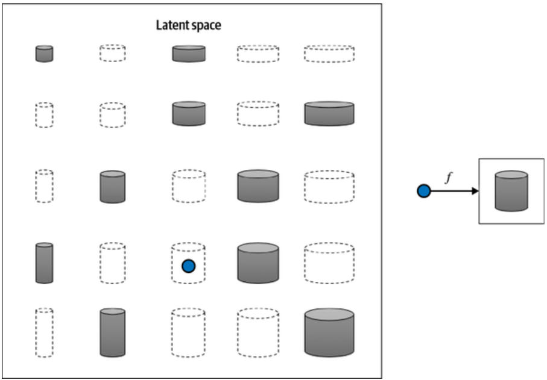
3 Unconditional and Conditional Generation
Generative models differ in what information is given to the model.
Sometimes we want the model to generate freely. For example, we may ask for any plausible face, room, product image, or video clip. This is called unconditional generation.
More often, especially in computer vision applications, we want the model to generate under constraints. The constraint may be a class label, text prompt, input image, mask, low-resolution image, layout, pose map, or reference image. This is called conditional generation.
In practice, this means that generative computer vision is broader than text-to-image generation. Models can create, edit, complete, enhance, translate, or animate visual data.
In unconditional generation, the model receives only a stochastic input, typically sampled from a simple distribution:
\[ \mathbf{z} \sim p(\mathbf{z}) \]
and generates an image:
\[ \hat{\mathbf{x}} = g_{\theta}(\mathbf{z}) \]
Here, \(\mathbf{z}\) provides diversity. Different samples of \(\mathbf{z}\) can produce different plausible outputs, such as different faces, animals, rooms, or product images.
In conditional generation, the model additionally receives conditioning information \(\mathbf{c}\):
\[ \hat{\mathbf{x}} = g_{\theta}(\mathbf{z}, \mathbf{c}) \]
The condition \(\mathbf{c}\) specifies what should be generated, preserved, completed, enhanced, or changed.
| Setting | Condition \(\mathbf{c}\) | Typical task | Example |
|---|---|---|---|
| Unconditional generation | none | image generation | generate a random face, room, or product image |
| Class-conditional generation | class label | class-guided image generation | generate an elephant |
| Text-to-image generation | text prompt | prompt-guided image generation | “a red chair in a modern living room” |
| Image editing | image + instruction | modify an existing image | change season, style, material, or lighting |
| Inpainting | image + mask | complete missing content | remove an object or fill a missing region |
| Outpainting | image + extended canvas | extend an image | expand the background beyond the image borders |
| Super-resolution / enhancement | low-resolution or degraded image | enhance visual detail | upscaling, denoising, sharpening |
| Image translation | source image | translate to another domain | MRI to CT, sketch to photo, day to night |
| Layout-controlled generation | segmentation map, depth map, pose, or edges | generate with structural control | create an image following a given layout |
| Reference-based generation | reference image | preserve identity, product, or style | generate new views of the same product |
| Synthetic data generation | task specification | training examples | rare classes, simulated defects, edge cases |
| Video generation | prompt, image, or frame sequence | video | short clips, object motion, scene animation |
The stochastic variable \(\mathbf{z}\) provides diversity, while the condition \(\mathbf{c}\) provides control.
| Task | What is the condition? |
|---|---|
| super-resolution | ? |
| inpainting | ? |
| MRI → CT | ? |
| text-to-image | ? |
| product image generation from reference | ? |
Click for possible answer
- low-resolution image
- image + mask
- source MRI image
- text prompt
- reference product image
Which of the tasks above require the model to be creative, and which require the model to be faithful to a given input?
Click for possible answer
Unconditional image generation and text-to-image generation often emphasize creative diversity, although they still need to produce plausible images.
Tasks such as inpainting, super-resolution, image translation, and image editing usually require stronger fidelity to the input. The model should generate new visual content, but it should also preserve important information from the condition, such as identity, geometry, anatomy, layout, or product appearance.
Looking at Figure 19, what do you notice? The images were generated with ChatGPT’s image generation model.
4 Learning Generative Models
The objective of a generative model is to produce synthetic data that looks like real data. Mathematically, synthetic data \(\hat{\mathbf{x}}\) should have a high probability under the probability density function of the real data \(p_{\text{data}}(\hat{\mathbf{x}})\). Figure 20 illustrates the principle: Models should aim to synthesize data points (x axis) which are probable under the true distribution.
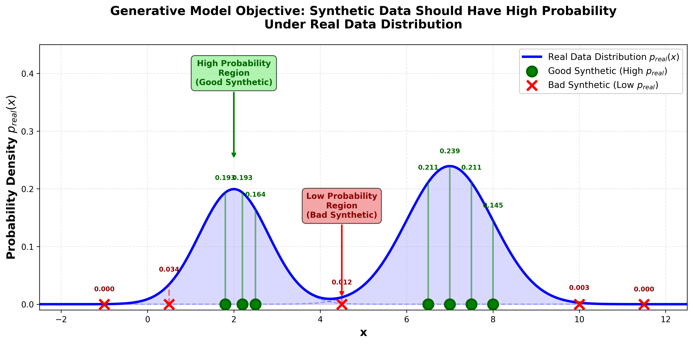
In general there are two approaches to generative modelling:
The direct (or implicit) approach learns a function that directly generates samples: \(g(\mathbf{z}) = \mathbf{x}\).
Indirect models learn scoring functions and generate samples by finding high-scoring values. There are different types of such models, such as density models.
Density models learn a probability density function \(p_{\theta}: \mathbf{x} \to [0, \infty)\) with the normalization constraint:
\[\int_{\mathbf{x}} p_{\theta}(\mathbf{x}) d\mathbf{x} = 1\]
The goal is to approximate the true probability density function \(p_{\theta} \sim p_{\text{data}}\).
This can be achieved by minimizing the difference between \(p_{\theta}\) and \(p_{\text{data}}\). However, since \(p_{\text{data}}\) is unkown, we can simply maximize the likelihood of the training data under \(p_{\theta}\).
\[\begin{equation} \underset{\theta}{\arg\max} \frac{1}{N} \sum_{i=1}^{N} \log p_{\theta}(\mathbf{x}^{(i)}) \end{equation}\]
Figure 21 illustrates how the modelled distribution improves by increasing the likelihood of observing the training data.
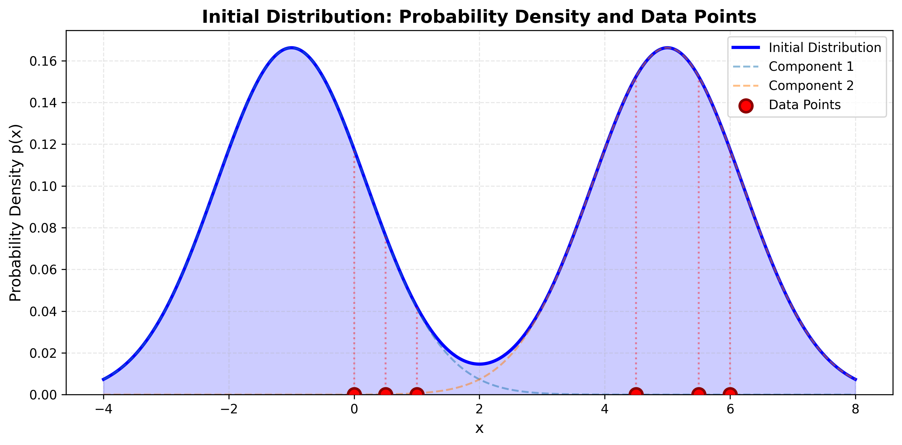
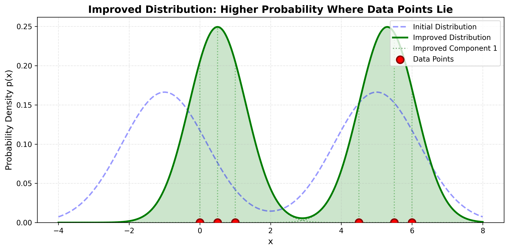
Examples: Variational Autoencoders (VAEs), normalizing flows, autoregressive models
Note: Once \(p_{\theta}\) is modelled, a generative model needs a mechanism to sample from it. Otherwise we can only evaluate the likelihood of a data point. For example, to detect outliers.
5 Desirable Properties of Generative Models
When evaluating generative models, we consider several important properties. Unfortunately, no single approach achieves all these properties simultaneously.
5.1 Efficient Sampling
The ability to generate new samples quickly. This is crucial for practical applications.
- Why it matters: Applications like real-time image generation, interactive tools, and large-scale dataset creation require fast sampling
- Which models excel: GANs and normalizing flows typically have efficient sampling (single forward pass)
- Which models struggle: Autoregressive models and some diffusion models require many sequential steps
5.2 High-Quality Sampling
Generated samples should be realistic, detailed, and indistinguishable from real data.
- Why it matters: Low-quality samples limit practical utility and can be easily detected as synthetic
- Which models excel: Modern GANs, diffusion models, and large-scale autoregressive models
- Trade-off: Often achieved at the cost of computational expense or training complexity
5.3 Coverage (Diversity)
The model should be able to generate the full diversity present in the training data, not just a subset of common examples.
- Why it matters: A model that only generates a few “safe” outputs is not truly learning the data distribution
- Common failure: Mode collapse in GANs, where the generator produces limited variety
- Which models excel: VAEs tend to have good coverage but sometimes at the cost of sample quality
5.4 Well-Behaved Latent Space
The latent space \(\mathbf{Z}\) should have smooth, meaningful structure where similar \(\mathbf{z}\) values produce similar outputs.
- Why it matters: Enables interpolation, controlled generation, and semantic editing
- Example: Linearly interpolating between two latent codes should produce a smooth transition between outputs
- Which models excel: VAEs explicitly encourage this through their training objective
5.5 Disentangled Latent Space
Different dimensions of \(\mathbf{z}\) should control independent factors of variation in the output.
- Why it matters: Enables fine-grained control over specific attributes (e.g., separate controls for pose, lighting, color)
- Example: One dimension controls “smiling” in face generation, another controls “age”, independently
- Challenge: Difficult to achieve without explicit architectural design or training objectives
- Applications: Critical for controllable generation and interpretable models
5.6 Efficient Likelihood Computation
The ability to evaluate \(p_{\theta}(\mathbf{x})\) for any given sample \(\mathbf{x}\).
- Why it matters:
- Enables direct optimization via maximum likelihood
- Allows outlier/anomaly detection
- Useful for model comparison and debugging
- Which models excel: Autoregressive models, normalizing flows, VAEs (approximate)
- Which models lack this: GANs, many diffusion models (cannot evaluate likelihood directly)
6 Evaluating Generative Models
Evaluating generative models is difficult because there is usually no single correct output. For a given prompt, label, mask, or input image, many different outputs may be valid.
A useful evaluation question is therefore not simply:
Is the generated image correct?
but rather:
Is the generated image plausible, diverse, useful, and faithful to the condition?
Different evaluation methods capture different aspects of this question.
6.1 Likelihood
For models that explicitly define a probability distribution \(p_{\theta}(\mathbf{x})\), we can evaluate the likelihood of test data:
\[ \frac{1}{N} \sum_{i=1}^{N} \log p_{\theta}(\mathbf{x}^{(i)}) \]
A high likelihood means that the model assigns high probability to real test examples.
However, likelihood is not always available. GANs, for example, do not provide an explicit density. Moreover, high likelihood does not always imply perceptually high-quality samples.
Likelihood evaluates how well the model assigns probability to real data. It does not directly tell us whether generated samples look good, are useful, or follow a prompt.
6.2 Human Evaluation
A direct but expensive approach is to ask humans to compare generated images.
Typical questions are:
- Which image looks more realistic?
- Which image better matches the prompt?
- Which image has fewer artifacts?
- Which image would you prefer to use?
Human studies are often the most meaningful evaluation for visual quality, but they are slow, subjective, and difficult to use during model development.
6.3 Distribution-Level Metrics
Many automatic metrics compare the distribution of generated images to the distribution of real images.
A common metric is the Inception Score (IS), see Salimans et al. (2016). The idea is that good generated images should be classified confidently, while the full set of generated images should cover many classes.
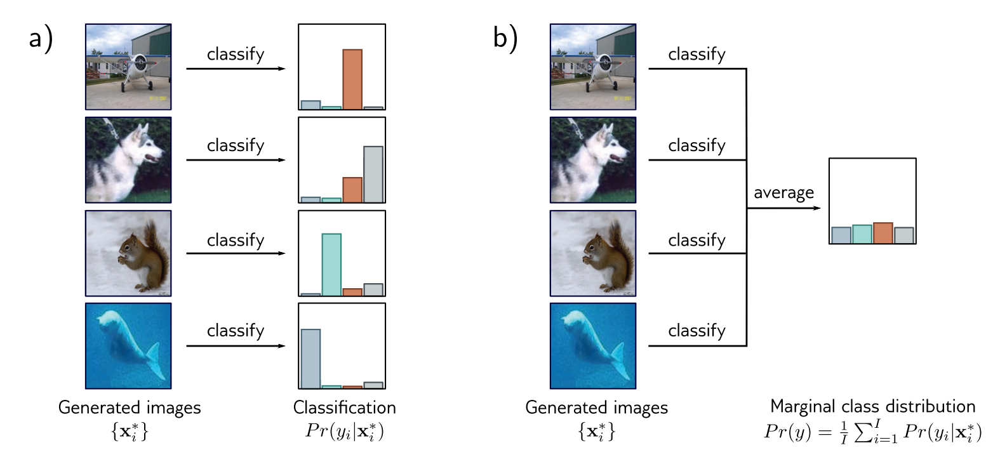
However, Inception Score has important limitations:
- it depends on a pretrained classifier
- it is most meaningful for class-balanced datasets such as ImageNet
- it does not compare generated images directly to real images
- it does not evaluate prompt adherence or input fidelity
Other commonly used distribution-level metrics include FID and KID. These metrics compare feature distributions of real and generated images, usually using a pretrained image model.
Distribution-level metrics are useful for benchmarking, but they can hide important failures. A model can achieve a good average score while still failing on rare classes, spatial relations, text rendering, or fine-grained details.
6.4 Conditional Generation Metrics
For conditional generation, realism alone is not enough. The output also has to match the condition.
| Task | What should be evaluated? |
|---|---|
| text-to-image | Does the image match the prompt? |
| image editing | Was the requested change made? |
| inpainting | Is the filled region plausible and consistent? |
| super-resolution | Are details realistic and faithful to the input? |
| image translation | Is the target domain reached while preserving content? |
| synthetic data generation | Does it improve downstream model performance? |
For text-to-image models, prompt alignment is often measured using vision-language models such as CLIP. For image editing, one may evaluate whether the edit was successful while preserving unchanged regions.
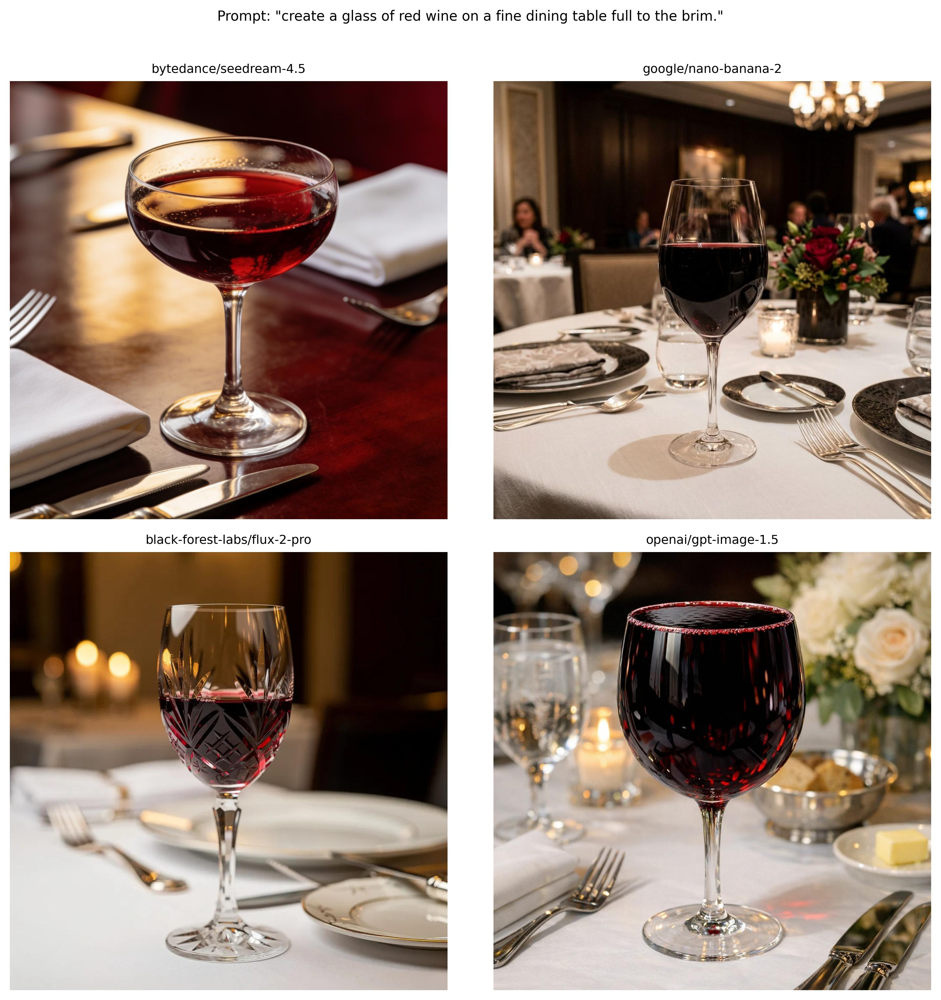
6.5 Task-Specific Evaluation
For many computer vision applications, generic image quality is not sufficient. The evaluation should match the intended use case.
Examples:
| Application | Possible evaluation |
|---|---|
| medical image translation | anatomical plausibility, expert review, downstream diagnosis |
| synthetic training data | improvement on real validation/test data |
| product image generation | preservation of product identity and geometry |
| super-resolution | perceptual quality, fidelity to input, downstream task performance |
| inpainting | boundary consistency, semantic plausibility, unchanged background |
This is particularly important for scientific, medical, and industrial applications. A generated image can look realistic but still be scientifically or semantically wrong.
6.6 Summary
There is no single best metric for generative models. A good evaluation usually combines several perspectives:
| Evaluation aspect | Example method |
|---|---|
| realism / fidelity | human judgement, FID, KID |
| diversity / coverage | distribution metrics, class coverage |
| likelihood | test-set log-likelihood, if available |
| prompt adherence | CLIP-based scores, human judgement |
| input fidelity | reconstruction or preservation metrics |
| downstream utility | performance of a model trained with synthetic data |
The right evaluation depends on the task. For creative image generation, human preference may be central. For synthetic training data, downstream model performance may matter most. For scientific or medical images, fidelity and domain-expert validation are essential.